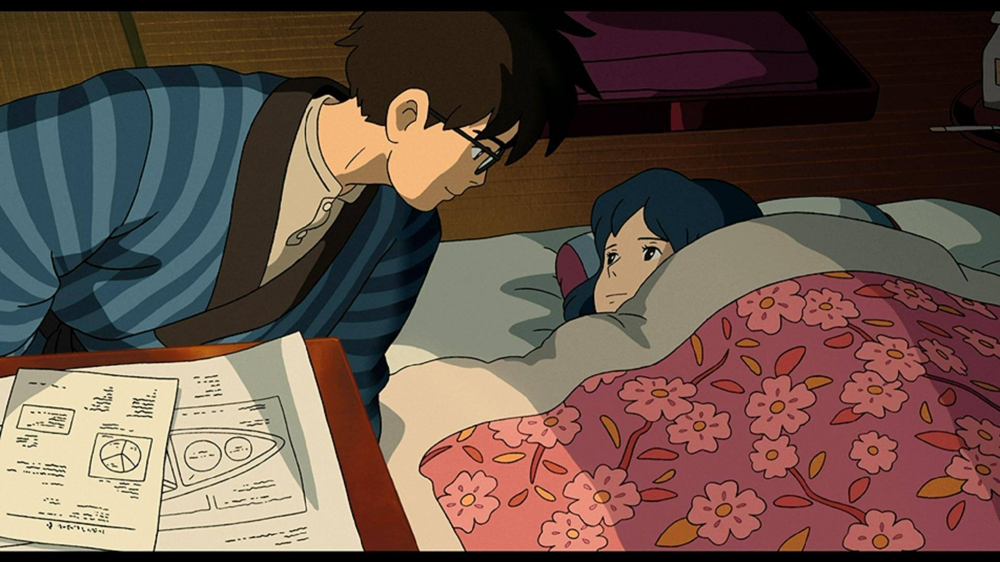
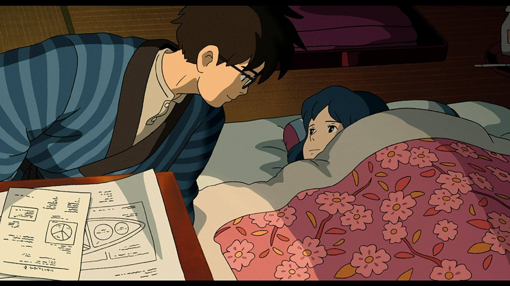
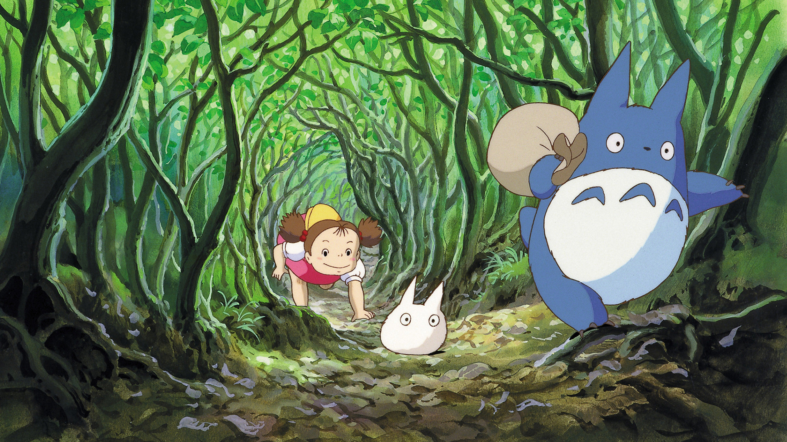
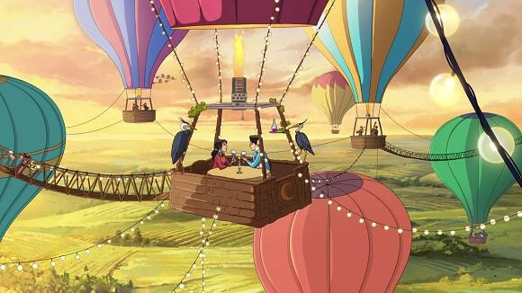
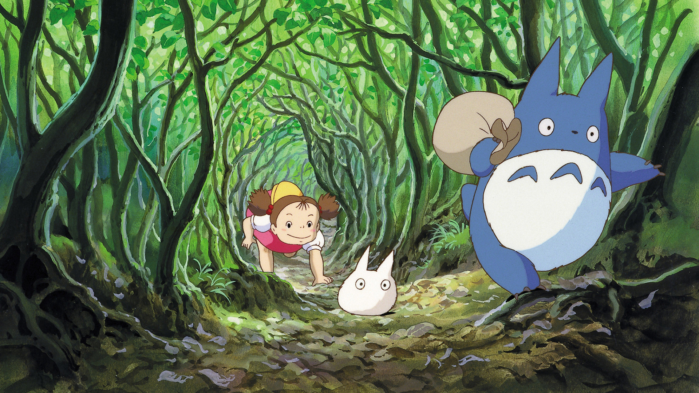
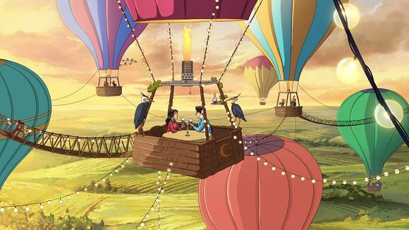

Hayao Miyazaki (宮崎 駿, Miyazaki Hayao, [mijaꜜzaki hajaꜜo]; born January 5, 1941) is a Japanese animator, filmmaker, screenwriter, author, and manga artist. A co-founder of Studio Ghibli, a film and animation studio, he has attained international acclaim as a masterful storyteller and as a maker of animated feature films, and is widely regarded as one of the most accomplished filmmakers in the animation business.

 

 


